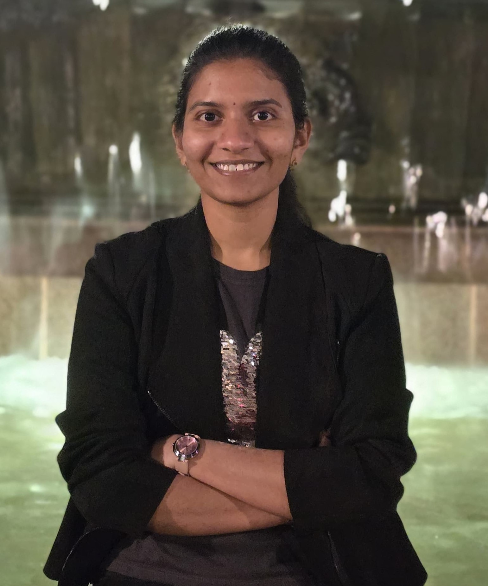

FEWsLab Team
Graduate Students

Dhanyasri Bolla
Dhanyasri is a master’s student in the Engineering Management program at George Washington University (GWU). She received her Bachelor of Technology in Electronics and Communication Engineering from the Sardar Vallabhbhai National Institute of Technology in 2023. Currently pursuing her master’s degree, Dhanya is interested in shifting into the finance field and is taking relevant courses to achieve this goal. Her undergraduate research focused on analyzing the performance of 5G waveforms over a 3D channel model. Professionally, she is skilled in Python, data visualization using Tableau and front-end web development. Her extracurricular interests include event management at university events and photography.
Abbey Kollar
Abbey is a doctoral student in the Systems Engineering Ph.D. program at GWU. She received her B.S. in Chemical Engineering with honors and a minor in Applied Economics from The Pennsylvania State University in 2023. Abbey’s undergraduate research focused on the conversion of plastics and biomass to oil and reducing nitrous oxide production from fertilizer use. Her research interests include renewable energy systems, climate change, economics, and policy. As a DTAIS fellow, Abbey will integrate trustworthy AI into her research as well. When not in the office or class, Abbey is often found walking around the National Mall and exploring D.C.

Tarun Kumanduri
Tarun is a Master’s student in the Data Analytics Program at George Washington University, having earned a Bachelor’s Degree in Computer Science and Engineering from Jawaharlal Nehru Technological University Hyderabad in 2023. His expertise in Data Analysis, Visualization, and Modeling is enhanced by his interest in Project Management and Strategic Planning. He served as an Operations Intern in the “School Innovation Challenge 2022,” a UNICEF and Government of Telangana initiative. His undergraduate research included projects like “You Walk We Authenticate” in the Machine Learning domain and “Smart Door Receptionist” in the Internet of Things domain. He is a certified Yoga Teacher and the Events Director for the George Washington Desis Student Organization.

Sachi Nandurkar
Sachi is a master’s student in the Engineering Management program at GWU. She holds a B.Tech in Electronics and Communication from the Indian Institute of Information Technology and is passionate about strategic planning, project management and advanced data analysis. Her research at the FEW’s Lab focuses on the life cycle assessment and circularity of electric vehicles, analyzing industry data, and examining their connections with policy implications. Apart from this, as a Graduate Teaching Assistant, she teaches labs on advanced Excel, SQL, and ERDs at GWU School of Business. She is also a Career Services Ambassador at GWU SEAS where she organizes events and class visits to foster student-faculty connections and develops career analysis dashboards. She interned as a Data Analyst at Infinity Automation Systems and has managed a global student exchange program as a Client Relationship Manager at AIESEC. She loves Formula One and is the author of a WordPress blog called “Constellation of Thoughts.”
Ji Qi
Ji is a graduate student in the Systems Engineering Ph.D. program at GWU. He received his BS in Economic Statistics from Zhengzhou University in 2020 and his MS. in Management Science and Engineering (Industrial Engineering) at Tianjin University in 2023. His past research topics mainly include the following areas: financial risk network construction, systematic risk analysis, product reliability and degradation modeling, Markov Decision Processes Based on Reinforcement Learning. He is trying to combine economy, decision science and network science in his future research. If you are interested in any of the areas mentioned above, you can contact him at ji.qi1@gwmail.gwu.edu. In his free time, he enjoys photography, hiking, and playing guitar. He is also a fan of classical music and Chinese painting.
Undergraduate Students

Rebecca Germaine
Rebecca is an undergraduate student at GWU studying Public Health with a minor in Psychology. She has engaged in research at the Camden Coalition, evaluating the substance use recovery system in New Jersey to provide recommendations to the Department of Mental Health and Addiction Services. While volunteering on a medical mission in Ghana, she organized sterile procedure supplies and inventory, documented patient encounters, and observed local disease trends. Rebecca was the president of GW Women’s Career Connect, where she facilitated engagement between students and industry professionals from companies such as Google, Mattel, and EY. Her research interests center around the intersection of climate change, environmental health, and public health, particularly in underserved communities such as Arctic indigenous populations.
Principal Investigator
Dr. Caitlin Grady

Dr. Grady is an Associate Professor in the Engineering Management and Systems Engineering Department at The George Washington University in Washington, DC. She is also a Nonresident Fellow for the Chicago Council on Global Affairs. Prior to joining GWU, Dr. Grady served as an Assistant Professor at The Pennsylvania State University.
Her academic background and research expertise span a variety of engineering and policy domains across food, energy, and water systems. This includes both qualitative and quantitative approaches to studying systems such as agricultural trade, the electricity grid, natural hazards, and adaptation to climate change.
Before her academic appointments, Dr. Grady held several federal government roles, including with the House of Representatives, the Department of Energy, and the Department of State. In these roles, she worked on a range of issues including agriculture, water and energy, air quality, budget and appropriations, international development, and diplomatic engagement.
Education:
Ph.D., Civil and Environmental Engineering, Purdue University
M.S., Agricultural and Biological Engineering, Purdue University
B.S., Science and Technology Studies, Virginia Tech (Humanities, Science, and the Environment Major; Environmental Policy and Planning Minor)
Alumni
- Jose Fernandez (2017–2018): M.Eng., Penn State Civil Engineering, Water Resources. Now Project Engineer in Ecuador.
- Andrew Pannone (2017–2018): Undergraduate, Penn State Engineering. Now PhD student in Dr. Saptarshi Das Lab, Penn State.
- Jack Iffert (2018–2019): B.S. Civil Engineering. Now Transportation Analyst at Kimley Horn.
- Jared Lawrence (2018–2019): MIA, PSU School of International Affairs.
- Maya Zambrano-Lee (Summer 2019): Visiting undergrad, Univ. of Maryland. Now Sustainability Intern, City of Brunswick.
- Abby Cowser (2019–2020): B.S. Civil Engineering. Now Staff Engineer, WDP & Associates.
- Tasnuva Mahjabin (2017–2020): Ph.D. Civil Engineering. Now Water Resources Engineer II at Atkins.
- Autumn Deitrick (2019–2021): B.S. Civil Engineering. Now Ph.D. student in Engineering Education at Penn State.
- Tori Lenze (2020–2022): B.S. Mechanical Engineering. Now graduate student at Penn State.
- Yuchen Fu (2021–2022): B.S. Civil Engineering. Now graduate student at Stanford University.
- Xinran Zhang (2021–2022): B.S. Civil Engineering. Now graduate student at University of Michigan.
- Luis Delgado (2020–2022): M.S. Civil Engineering. Now PhD student in Engineering Education at Penn State.
- Sarah Torhan (2020–2022): M.S. Civil Engineering. Now PhD student at Penn State.
- Lauren Dennis (2019–2023): Ph.D. Civil Engineering, Climate Science. Now Presidential Management Fellow.
- Paniz Mohammadpour (2018–2023): Ph.D. Civil Engineering. Now Water Resources Engineer II at Atkins.
- Selena Hinojos (2021-2024) : Ph.D. in Engineering Management. Now Post Doc at University of Lousiana.
Student Awards
- Abbey Kollar – NSF Graduate Research Fellowship (2024)
- Lauren Dennis – Presidential Management Fellow (2023)
- Sarah Torhan – NDSEG Fellow, Fulbright Fellow, Boren Fellow (2022)
- Autumn Deitrick – NSF Fellow (2021), Goldwater Scholar (2020), Mission Award (2021)
- Selena Hinojos – Bunton-Waller Fellowship (2020–2021)
- Luis Delgado – GEM Fellow, Bunton-Waller Fellowship (2020–2021)
- Abby Cowser – ASCE New Faces of Civil Engineering, Oswald Award (2020)
- Lauren Dennis – PSU Graduate Fellowship (2019–2020), NSF NRT Fellow (2020–2021)
- Paniz Mohammadpour – CUAHSI Travel Scholarship (2019)
- Jack Iffert – Ralph Dorn Hetzel Award (2019), Engineering Technology and Ethics Fellowship (2018)
- Tasnuva Mahjabin – Travel Grant (AGU Fall Conference), SESYNC Workshop Award (2018)
- Andrew Pannone – CERI Scholarship (2018), REU Fellowship (2018)
Current and prospective students are encouraged to contact Dr. Grady for opportunities.
:::